第十二章 URDF建模
12.1 建模工具urdf¶
12.1.1 urdf简介¶
URDF 文件是一个标准的 XML 文件，在 ROS 中预定义了一系列的标签用于描述机器人模型，机器人模型可能较为复杂，但是 ROS 的 URDF 中机器人的组成却是较为简单的，可以有以下三种标签：
- robot ，这是整个 urdf 文件的根标签；
- link ，用于描述机器人刚体部分的标签；
- joint ，是用于连接不同刚体的“关节”。
12.1.2 robot标签¶
urdf 中为了保证 xml 语法的完整性，使用了robot标签作为根标签，所有的 link 和 joint 以及其他标签都必须包含在 robot 标签内。
属性：
- name ：用于指定机器人模型的名称。
- 主文件必须具有名称属性， name 属性在被包含的文件中是可选的。如果在被包含文件中指定了属性名称，则它必须具有与主文件中相同的值。
12.1.3 link标签¶
urdf 中的 link 标签用于描述机器人某个部件(也即刚体部分)的外观和物理属性，比如: 机器人底座、轮子、激光雷达、摄像头等。每一个部件都对应一个 link, 在 link 标签内，可以设计该部件的形状、尺寸、颜色、惯性矩阵、碰撞参数等一系列属性。
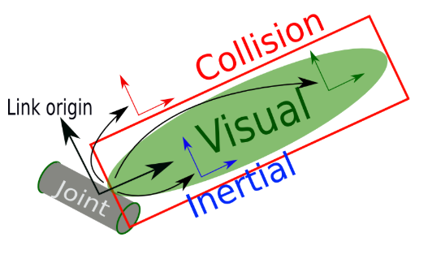
属性：
- name：用于指定 link 的名称。
子标签：
- visual：用于描述 link 的可视化属性，可以设置link的形状。
- geometry：设置 link 的形状。
- box：立方体。
- cylinder：圆柱体。
- sphere：球体。
- mesh：通过属性filename引用“皮肤”文件，为link设置外观，该文件必须是本地文件。使用 package://
/ 为文件名添加前缀。
- origin：设置 link 相对偏移量和旋转角度。
- xyz：三个轴的偏移量。
- rpy：欧拉角(roll、pitch、yaw)的角度。
- material：材设置 link 的材料/材质。
- name：材料名称。
- color：材料的颜色，通过rgba(red/green/blue/alpha)参数指定，范围 [0, 1] 。
- texture：材质的纹理，通过属性filename引用。
- geometry：设置 link 的形状。
- collision：用于指定 link 的碰撞属性。可以与 link 的可视化属性一致，也可以不同。
- name：用于指定碰撞属性的名称。
- geometry：参考 visual 子标签的使用规则。
- origin：参考 visual 子标签的使用规则。
- inertial：用于设置 link 的质量、质心位置和中心惯性特性，如果未指定，则默认为质量为 0 、惯性为 0 。
- origin
- mass：设置 link 的质量。
- inertia
Warning
collision 和 inertial 在仿真环境下才需要使用到，如果只是在 rviz2 中集成 urdf，那么不必须为 link 定义这两个标签。
12.1.4 joint标签¶
urdf 中的 joint 标签用于描述机器人关节的运动学和动力学属性，还可以指定关节运动的安全极限，机器人的两个部件(分别称之为 parent link 与 child link)以 ”关节“ 的形式相连接，不同的关节有不同的运动形式: 旋转、滑动、固定、旋转速度、旋转角度限制等。

属性：
- name：为关节命名，名称需要唯一。
-
type：设置关节类型。
-
continuous：旋转关节，可以绕单轴无限旋转。
- revolute：旋转关节，类似于 continues，但是有旋转角度限制。
- prismatic：滑动关节，沿某一轴线移动的关节，有位置极限。
- planer：平面关节，允许在平面正交方向上平移或旋转。
- floating：浮动关节，允许进行平移、旋转运动。
- fixed：固定关节，不允许运动的特殊关节。
-
子标签：
-
parent：指定父级 link 。
- link：父级link的名称。
-
child：指定子级 link 。
- link：子级link的名称。
-
origin：表示从父 link 到子 link 的转换，关节位于子 link 的原点。
- xyz：各轴线上的偏移量。
- rpy：各轴线上的偏移弧度。
-
axis：用于设置围绕哪个关节轴运动，默认值为（1，0，0）
- xyz：各轴线上的偏移量。
-
calibration：关节的参考位置，用于校准关节的绝对位置。
- rising：当关节向正方向移动时，该参考位置将触发上升沿。
- falling：当关节向正方向移动时，该参考位置将触发下降沿。
-
dynamics：指定接头物理特性的元素。这些值用于指定关节的建模属性，对仿真较为有用。
- damping：关节的物理阻尼值，默认为0。
- friction：关节的物理静摩擦值，默认为0。
-
limit：（关节类型是 revolute 或 prismatic 时必须使用）。
- lower：指定关节下限的属性（旋转关节以弧度为单位，棱柱关节以米为单位），如果关节是连续的，则省略。
- upper：指定关节上限的属性（旋转关节以弧度为单位，棱柱关节以米为单位），如果关节是连续的，则省略。
- effort：指定关节可受力的最大值。
- velocity：用于设置最大关节速度（旋转关节以弧度每秒 [rad/s] 为单位，棱柱关节以米每秒 [m/s] 为单位）。
-
mimic：模拟其他关节运动：value = multiplier * other_joint + offset 。
- joint：指定要模拟的关节的名称。
- multiplier：指定上述公式中的乘法因子。
- offset：指定要在上述公式中添加的偏移量，默认为 0（旋转关节的单位是弧度，棱柱关节的单位是米）。
-
safety_controller：安全控制器。
- soft_lower_limit：指定安全控制器开始限制关节位置的下关节边界，此限制需要大于joint下限。
- soft_upper_limit：指定安全控制器开始限制关节位置的关节上边界的属性，此限制需要小于joint上限。
- k_position：指定位置和速度限制之间的关系。
- k_velocity：指定力和速度限制之间的关系。
12.2 urdf简单使用¶
12.2.1 urdf建模示例¶
创建功能包
在功能包下新建urdf目录，添加第一个文件genimind.urdf。
<?xml version="1.0"?>
<robot name="genimind">
<!-- link_1:机器人身体部分 -->
<link name="base_link">
<!-- 外观描述 -->
<visual>
<!-- 1.沿着机器人几何中心的偏移和旋转分量 -->
<origin xyz="0.0 0.0 0.0" rpy="0.0 0.0 0.0"/>
<!-- 2.几何形状 -->
<geometry>
<!-- 单位是米 -->
<box size="0.3 0.137 0.004"/>
</geometry>
<!-- 3.材料 -->
<material name="carbon_fiber">
<color rgba="0.05 0.05 0.05 1.0"/>
</material>
</visual>
</link>
<!-- link_2:惯性测量单元 -->
<link name="imu_link">
<visual>
<origin xyz="0.0 0.0 0.0" rpy="0.0 0.0 0.0"/>
<geometry>
<box size="0.004 0.004 0.002"/>
</geometry>
<material name="black">
<color rgba="0.5 0.5 0.5 0.5"/>
</material>
</visual>
</link>
<!-- joint_1 -->
<joint name="joint_1" type="fixed">
<origin xyz="0.0 0.0 0.002" rpy="0.0 0.0 0.0"/>
<parent link="base_link"/>
<child link="imu_link"/>
</joint>
</robot>
进入genimind_description/urdf目录，输入以下命令：

新增两个文件，可以点开pdf瞅瞅，以树形结构显示了link与joint的关系。
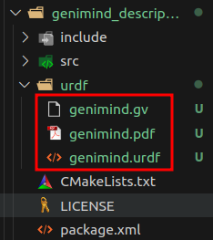
然后我们启动rviz2加载模型会发现TF错误，是因为我们写的joint未成功加载。
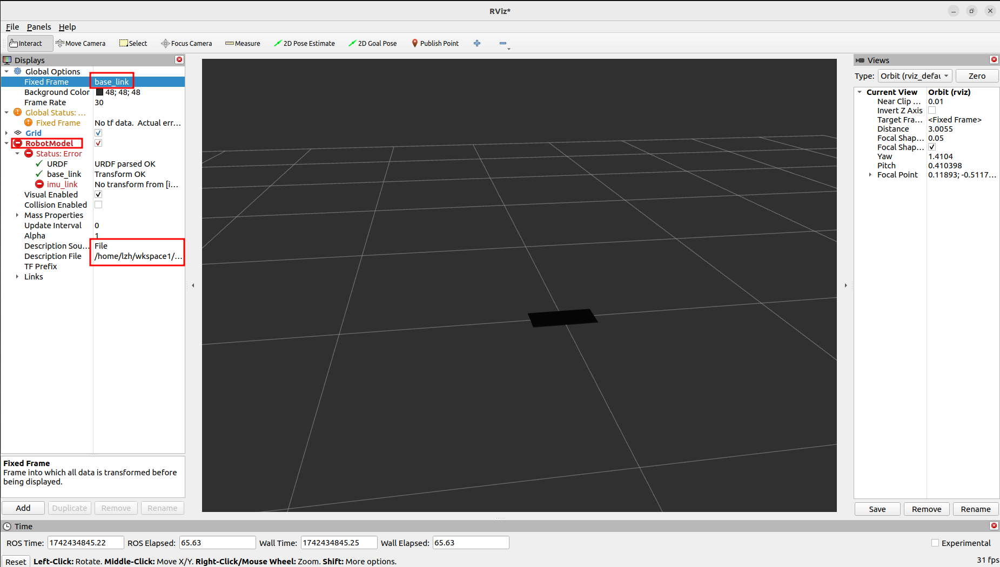
12.2.2 rviz中加载模型¶
要成功加载urdf模型，我们需要使用两个话题，robot_state_publisher和joint_state_publisher，而话题内容无需我们自己写，安装对应的库即可。
然后在功能包genimind_description下新建launch目录，我们需要封装两个话题需要的指令以及自动启动rviz2。
import launch
import launch_ros
from ament_index_python.packages import get_package_share_directory
import launch_ros.parameter_descriptions
def generate_launch_description():
# 获取urdf功能包的路径
urdf_pkg_path = get_package_share_directory("genimind_description")
# 获取urdf文件的路径
urdf_file_path = urdf_pkg_path + "/urdf/genimind.urdf"
# 声明一个urdf文件路径的参数
action_declare_arg_urdf_path = launch.actions.DeclareLaunchArgument(
"urdf",
default_value=urdf_file_path,
description="urdf文件的绝对路径"
)
# 1.获取指令的返回内容
substitutions_cmd = launch.substitutions.Command(
["cat ", launch.substitutions.LaunchConfiguration("urdf")]
)
# 2.获取指令的返回内容(多一次类型转换)
robot_description = launch_ros.parameter_descriptions.ParameterValue(
substitutions_cmd,
value_type=str
)
# robot_state_publisher话题节点启动
robot_state_publisher_node = launch_ros.actions.Node(
package="robot_state_publisher",
executable="robot_state_publisher",
parameters=[{"robot_description": robot_description}]
)
# joint_state_publisher话题节点启动
joint_state_publisher_node = launch_ros.actions.Node(
package="joint_state_publisher",
executable="joint_state_publisher",
)
# rviz节点启动
rviz_node = launch_ros.actions.Node(
package="rviz2",
executable="rviz2"
)
# 合成启动描述
launch_description = launch.LaunchDescription([
action_declare_arg_urdf_path,
joint_state_publisher_node,
robot_state_publisher_node,
rviz_node
])
return launch_description
rviz加载urdf模型程序有几点需要注意：
🕐robot_state_publisher话题需要一个robot_description参数。
可以使用ros2 run robot_state_publisher robot_state_publisher --debug查看报错输出，显示这个参数是URDF文件。
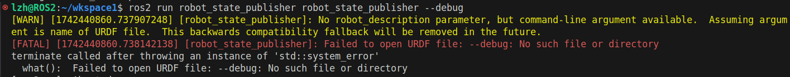
🕑robot_description参数并未传文件路径，而是使用cat指令传入了文件内容。
按照报错注释应是传入文件才对，但实测按照 fishros 书籍直接传入文件内容才不会报错。
🕒launch.substitutions.Command获取命令的返回值，字符串类型。launch_ros.parameter_descriptions.ParameterValue可以更该参数类型，因此robot_description参数传入 robot_description 变量或 substitutions_cmd 变量结果均对。
🕓rivz除了直接输入rviz2还可以使用ros2 run rviz2 rviz2运行，所以可以使用launch_ros.actions.Node方式启动。
配置CmakeLists.txt文件
运行launch文件：
colcon build --packages-select genimind_description
source install/setup.bash
ros2 launch genimind_description genimind_model.launch.py
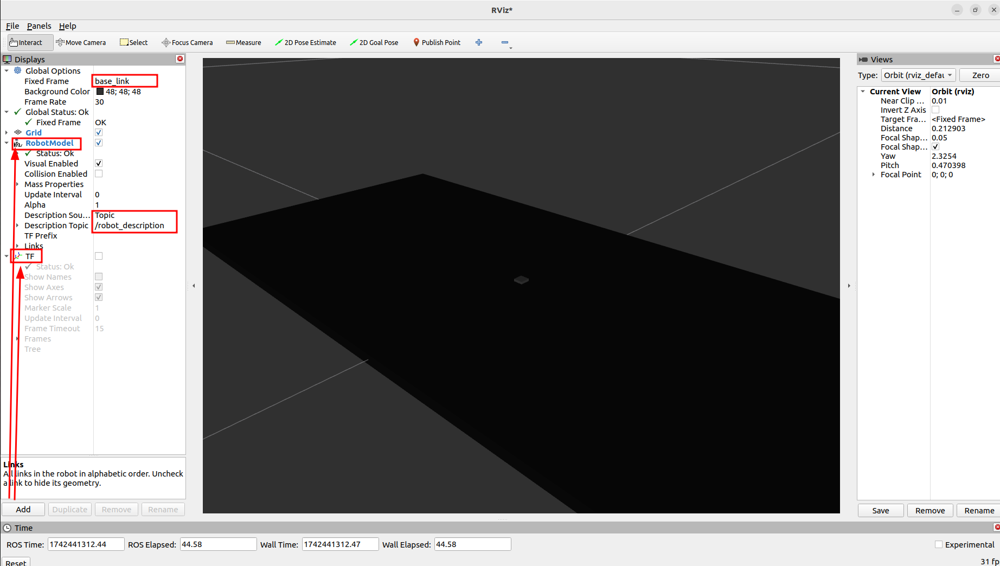
12.2.3 初始化rviz¶
🕐将添加过TF、RobotModel组件的rviz保存到功能包下config目录下。
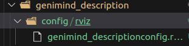
🕑在launch中添加参数。
# 获取rviz初始化文件路径
rviz_config_path = urdf_pkg_path + "/config/rviz/genimind_descriptionconfig.rviz"
# rviz节点启动
rviz_node = launch_ros.actions.Node(
package="rviz2",
executable="rviz2",
arguments=['-d', rviz_config_path]
)
完整程序：
import launch
import launch_ros
from ament_index_python.packages import get_package_share_directory
import launch_ros.parameter_descriptions
def generate_launch_description():
# 获取urdf功能包的路径
urdf_pkg_path = get_package_share_directory("genimind_description")
# 获取urdf文件的路径
urdf_file_path = urdf_pkg_path + "/urdf/genimind.urdf"
# 获取rviz初始化文件路径
rviz_config_path = urdf_pkg_path + "/config/rviz/genimind_descriptionconfig.rviz"
# 声明一个urdf文件路径的参数
action_declare_arg_urdf_path = launch.actions.DeclareLaunchArgument(
"urdf",
default_value=urdf_file_path,
description="urdf文件的绝对路径"
)
# 1.获取指令的返回内容
substitutions_cmd = launch.substitutions.Command(
["cat ", launch.substitutions.LaunchConfiguration("urdf")]
)
# 2.获取指令的返回内容(多一次类型转换)
robot_description = launch_ros.parameter_descriptions.ParameterValue(
substitutions_cmd,
value_type=str
)
# robot_state_publisher话题节点启动
robot_state_publisher_node = launch_ros.actions.Node(
package="robot_state_publisher",
executable="robot_state_publisher",
parameters=[{"robot_description": robot_description}]
)
# joint_state_publisher话题节点启动
joint_state_publisher_node = launch_ros.actions.Node(
package="joint_state_publisher",
executable="joint_state_publisher",
)
# rviz节点启动
rviz_node = launch_ros.actions.Node(
package="rviz2",
executable="rviz2",
arguments=['-d', rviz_config_path]
)
# 合成启动描述
launch_description = launch.LaunchDescription([
action_declare_arg_urdf_path,
joint_state_publisher_node,
robot_state_publisher_node,
rviz_node
])
return launch_description
配置CmakeLists.txt文件
这样每次启动就不用重复添加组件了。
colcon build --packages-select genimind_description
source install/setup.bash
ros2 launch genimind_description genimind_model.launch.py
12.3 xacro模块化¶
12.3.1 xacro简介¶
Xacro 是 XML Macros 的缩写，Xacro 是一种 XML 宏语言，是可编程的 XML。Xacro 可以声明变量，可以通过数学运算求解；可以使用流程控制控制执行顺序；还可以通过宏封装、复用功能，从而提高代码复用率以及程序的安全性。
xacro语法的使用如下：
robot标签：
声明xacro模块：
使用xacro模块参数：
<joint name="${imu_name}_joint" type="fixed">
<origin xyz="${xyz}" rpy="0.0 0.0 0.0"/>
<parent link="base_link"/>
<child link="${imu_name}_link"/>
</joint>
使用xacro模块：
xacro文件包含语法，此功能可以让我们的文件更具模块化，将相机、雷达等都单独封装到一个xacro文件。
<robot xmlns:xacro="http://wiki.ros.org/xacro" name="genimind">
<xacro:include filename="base.xacro" />
<xacro:include filename="camera.xacro" />
<xacro:include filename="laser.xacro" />
</robot>
12.3.2 xacro基础¶
在功能包的urdf目录下新建genimind.xacro文件：
<?xml version="1.0"?>
<robot xmlns:xacro="http://www.ros.org/wiki/xacro" name="genimind">
<!-- 声明base_link模块 -->
<xacro:macro name="base_link" params="size ">
<link name="base_link">
<visual>
<origin xyz="0.0 0.0 0.0" rpy="0.0 0.0 0.0"/>
<geometry>
<box size="${size}"/>
</geometry>
<material name="carbon_fiber">
<color rgba="0.05 0.05 0.05 1.0"/>
</material>
</visual>
</link>
</xacro:macro>
<!-- 声明imu_link模块 -->
<xacro:macro name="imu_link" params="imu_name xyz">
<!-- link -->
<link name="${imu_name}_link">
<visual>
<origin xyz="0.0 0.0 0.0" rpy="0.0 0.0 0.0"/>
<geometry>
<box size="0.04 0.04 0.02"/>
</geometry>
<material name="red">
<color rgba="1 0.0 0.0 0.8"/>
</material>
</visual>
</link>
<!-- joint -->
<joint name="${imu_name}_joint" type="fixed">
<origin xyz="${xyz}" rpy="0.0 0.0 0.0"/>
<parent link="base_link"/>
<child link="${imu_name}_link"/>
</joint>
</xacro:macro>
<!-- 声明wheel_link模块 -->
<xacro:macro name="wheel_link" params="wheel_name xyz">
<!-- link -->
<link name="${wheel_name}_link">
<visual>
<origin xyz="0.0 0.0 0.0" rpy="1.57 0.0 0.0"/>
<geometry>
<cylinder radius="0.0375" length="0.03"/>
</geometry>
<material name="green">
<color rgba="0.0 0.5 0.2 0.8"/>
</material>
</visual>
</link>
<!-- joint -->
<joint name="${wheel_name}_joint" type="continuous">
<origin xyz="${xyz}" rpy="0.0 0.0 0.0"/>
<parent link="base_link"/>
<child link="${wheel_name}_link"/>
</joint>
</xacro:macro>
<!-- 使用xacro模块 -->
<xacro:base_link size="0.3 0.274 0.05"/>
<xacro:imu_link imu_name="imu_main" xyz="0.0 0.0 0.035"/>
<xacro:wheel_link wheel_name="front_left_wheel" xyz="0.1125 0.152 0.0"/>
<xacro:wheel_link wheel_name="front_right_wheel" xyz="0.1125 -0.152 0.0"/>
<xacro:wheel_link wheel_name="back_left_wheel" xyz="-0.1125 0.152 0.0"/>
<xacro:wheel_link wheel_name="back_right_wheel" xyz="-0.1125 -0.152 0.0"/>
</robot>
安装工具xacro，类似于cat指令，可以将xacro文件的内容打印出终端。
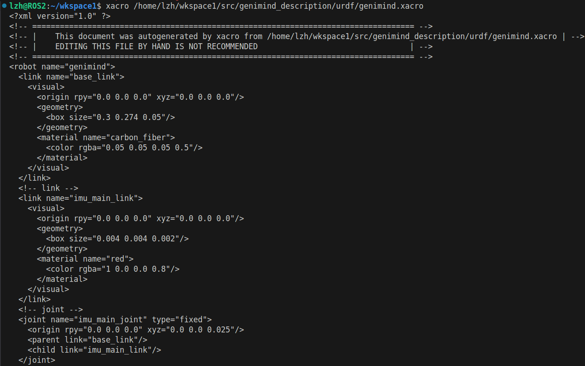
集成xacro到launch，修改文件名和cat指令为xacro。
import launch
import launch_ros
from ament_index_python.packages import get_package_share_directory
import launch_ros.parameter_descriptions
def generate_launch_description():
# 获取urdf功能包的路径
urdf_pkg_path = get_package_share_directory("genimind_description")
# 获取urdf文件的路径(修改)
urdf_file_path = urdf_pkg_path + "/urdf/genimind.xacro"
# 获取rviz初始化文件路径
rviz_config_path = urdf_pkg_path + "/config/rviz/genimind_descriptionconfig.rviz"
# 声明一个urdf文件路径的参数
action_declare_arg_urdf_path = launch.actions.DeclareLaunchArgument(
"urdf",
default_value=urdf_file_path,
description="urdf文件的绝对路径"
)
# 1.获取指令的返回内容(修改)
substitutions_cmd = launch.substitutions.Command(
["xacro ", launch.substitutions.LaunchConfiguration("urdf")]
)
# 2.获取指令的返回内容(多一次类型转换)
robot_description = launch_ros.parameter_descriptions.ParameterValue(
substitutions_cmd,
value_type=str
)
# robot_state_publisher话题节点启动
robot_state_publisher_node = launch_ros.actions.Node(
package="robot_state_publisher",
executable="robot_state_publisher",
parameters=[{"robot_description": robot_description}]
)
# joint_state_publisher话题节点启动
joint_state_publisher_node = launch_ros.actions.Node(
package="joint_state_publisher",
executable="joint_state_publisher",
)
# rviz节点启动
rviz_node = launch_ros.actions.Node(
package="rviz2",
executable="rviz2",
arguments=['-d', rviz_config_path]
)
# 合成启动描述
launch_description = launch.LaunchDescription([
action_declare_arg_urdf_path,
joint_state_publisher_node,
robot_state_publisher_node,
rviz_node
])
return launch_description
编译运行效果如下。
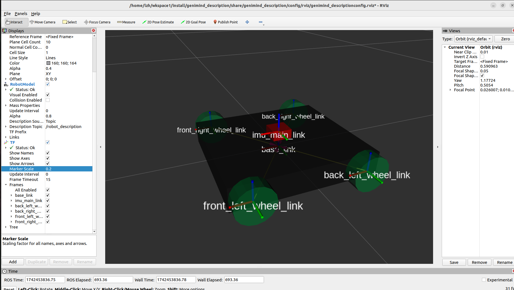
12.4 solidworks导出urdf¶
12.4.1 sw_urdf_exporter插件¶
在实际的开发工作在，我们不太可能纯手敲一个机器人模型，我们一般都使用3D建模软件进行机器人的建模，因此官方也提供了一个solidworks插件可以直接导出urdf文件。
下载地址：sw_urdf_exporter
下载.exe文件然后安装就可以了。
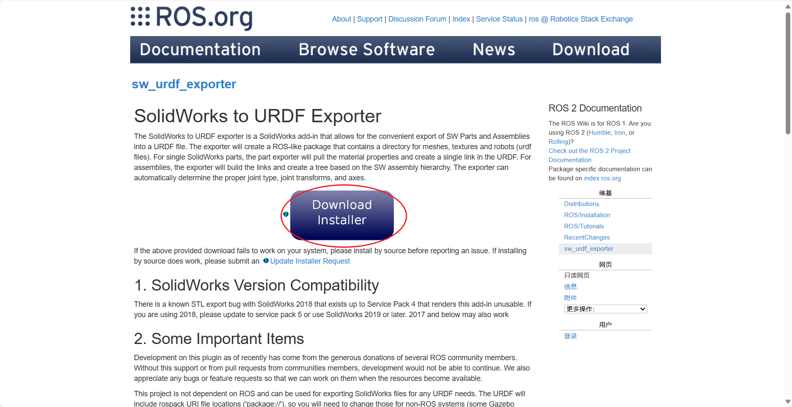
12.4.2 导出urdf¶
以四轮底盘为例，当然这个模型并不完整，他缺少IMU、相机、激光雷达等，但导出流程都是类似的。
🕐 首先给四个轮子添加基准轴。
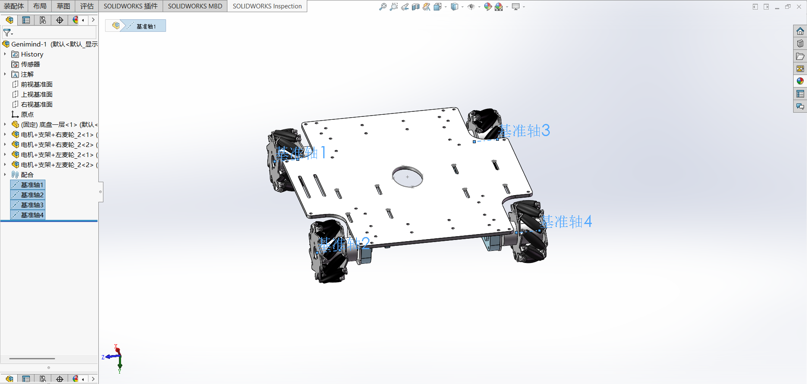
🕑给四个轮子个和底盘中心添加点。
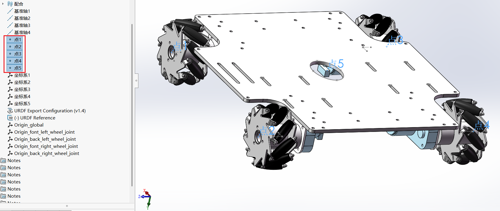
🕒添加坐标系(ROS中的坐标系为前X、左Y、上Z)。
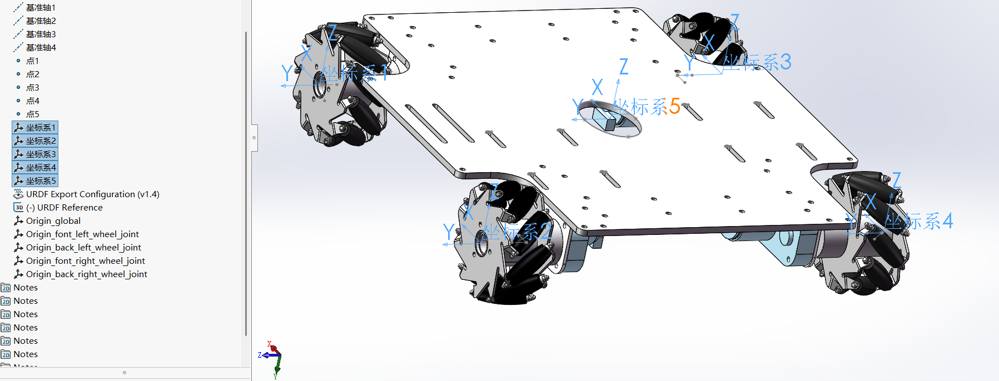
🕓插件导出urdf。
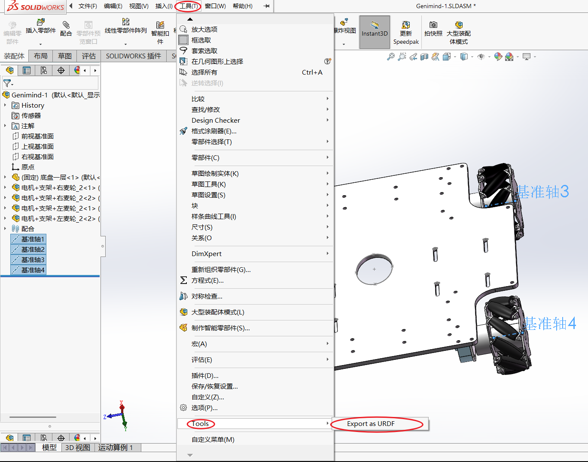
🕔配置link，每个link对应一个坐标系，与前面自己设置的坐标系对应。
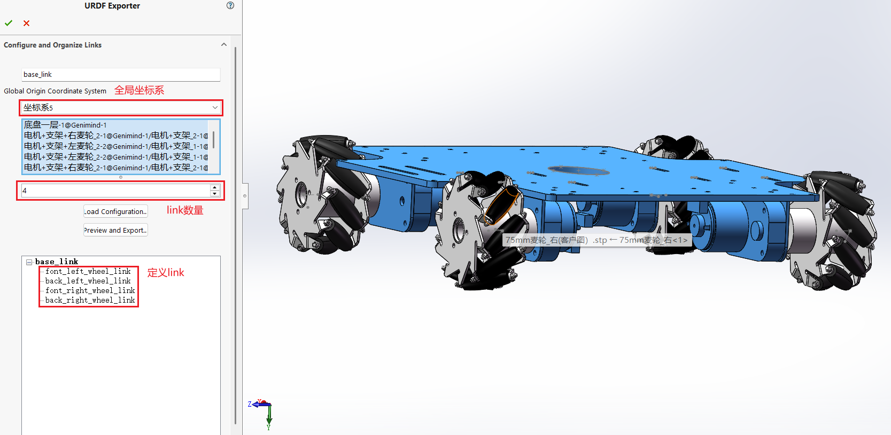
其余的link均一致，配置好所以link，然后Export导出。
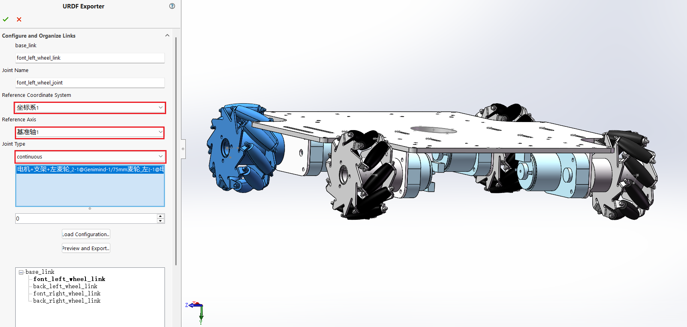
🕕确认一下坐标系、基准轴、joint类型是否正确，仿真参数不知道可以不加，点击Next。
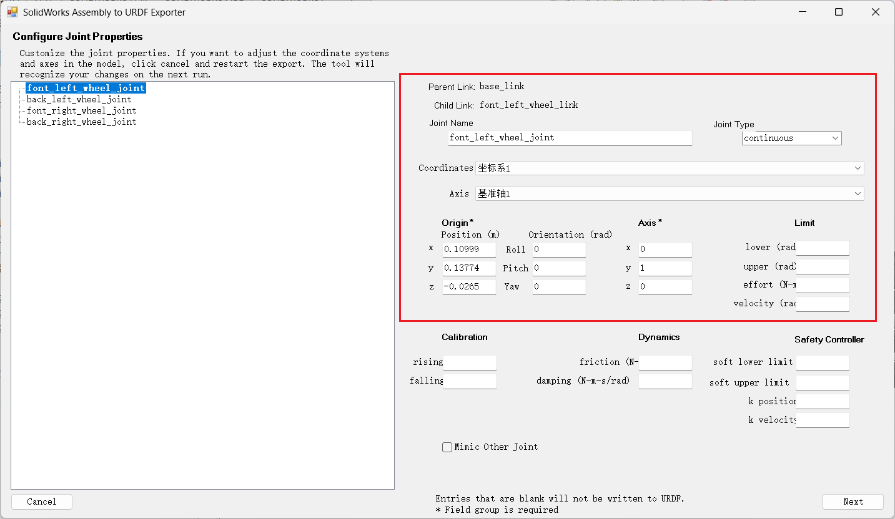
🕖导出功能包，名字最好和已有的功能包一致，就不用修改文件了。
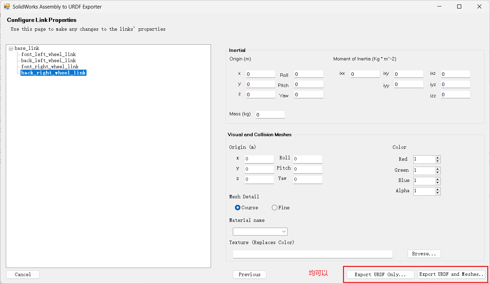
🕗导出的功能包不要直接用，版本好像是ROS1的，我们移植几个文件到我们的功能包即可。
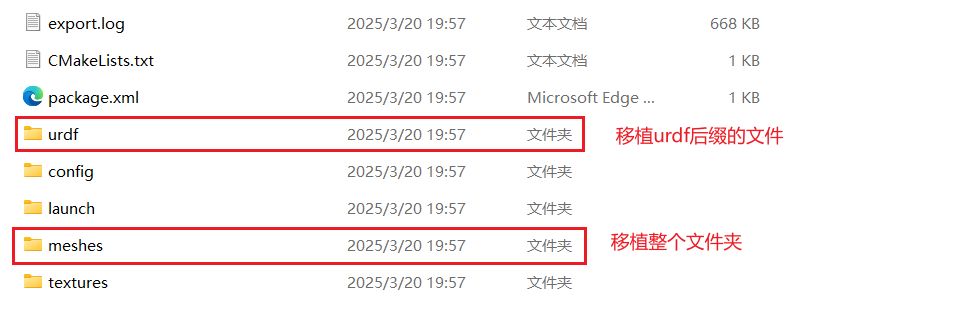
移植到我们的功能包下后，目录如下：
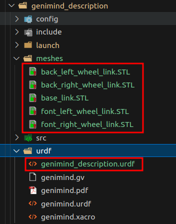
urdf文件的每个link的这个名称一定和功能包一致，按我说的导出时填功能包的名字(即genimind_description)就不会错。
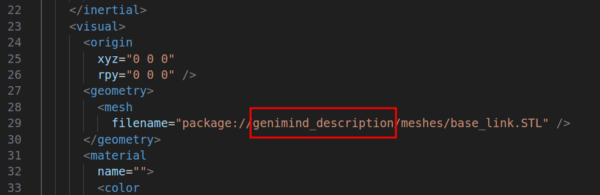
🕘修改launch和camke。
CmakeLists.txt 中下载meshes目录：
launch修改文件名称：
# 获取urdf文件的路径
urdf_file_path = urdf_pkg_path + "/urdf/genimind_description.urdf"
# 1.获取指令的返回内容
substitutions_cmd = launch.substitutions.Command(
["cat ", launch.substitutions.LaunchConfiguration("urdf")]
)
编译运行，结果如下：
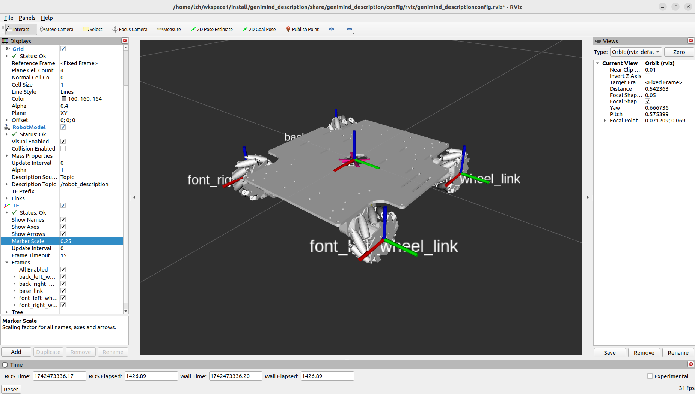
12.4.3 让轮子着地¶
目前我们的全局坐标是base_link，因此轮子不会着地，我们添加一个虚拟link，固定到base_link的正下方，与轮子高度平齐。
这里的高度根据自己模型大致算一下就可以。
<robot
name="genimind_description">
<!-- 添加虚拟link -->
<link name="base_footprint" />
<joint name="base_joint" type="fixed">
<parent link="base_footprint" />
<child link="base_link" />
<origin xyz="-0.000168546343865929 0.000259630628177465 0.057" rpy="0 0 0" />
</joint>
<!-- 添加虚拟link -->
<link
name="base_link">
<inertial>
<origin
xyz="-0.000168546343865929 0.000259630628177465 -0.0129346226647377"
rpy="0 0 0" />
<mass
value="0.493681601484372" />
<inertia
ixx="0.00132345261482042"
ixy="-1.9928481762346E-06"
ixz="4.4132768003374E-22"
iyy="0.00183954978750504"
iyz="4.72285914930666E-15"
izz="0.00311591135609084" />
</inertial>
<visual>
<origin
xyz="0 0 0"
rpy="0 0 0" />
<geometry>
<mesh
filename="package://genimind_description/meshes/base_link.STL" />
</geometry>
<material
name="">
<color
rgba="1 1 1 1" />
</material>
</visual>
<collision>
<origin
xyz="0 0 0"
rpy="0 0 0" />
<geometry>
<mesh
filename="package://genimind_description/meshes/base_link.STL" />
</geometry>
</collision>
</link>
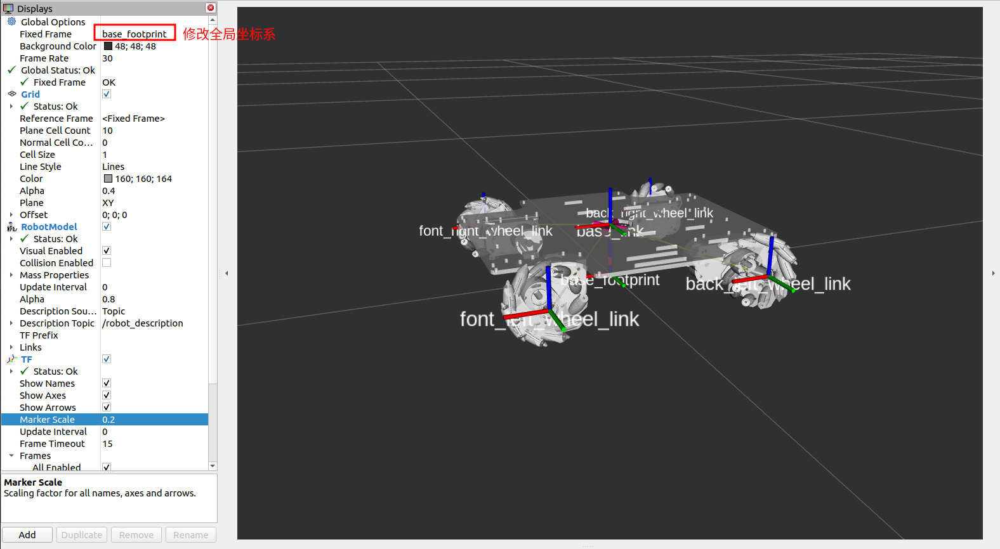